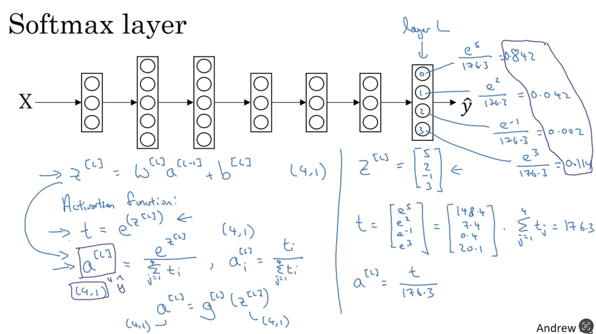
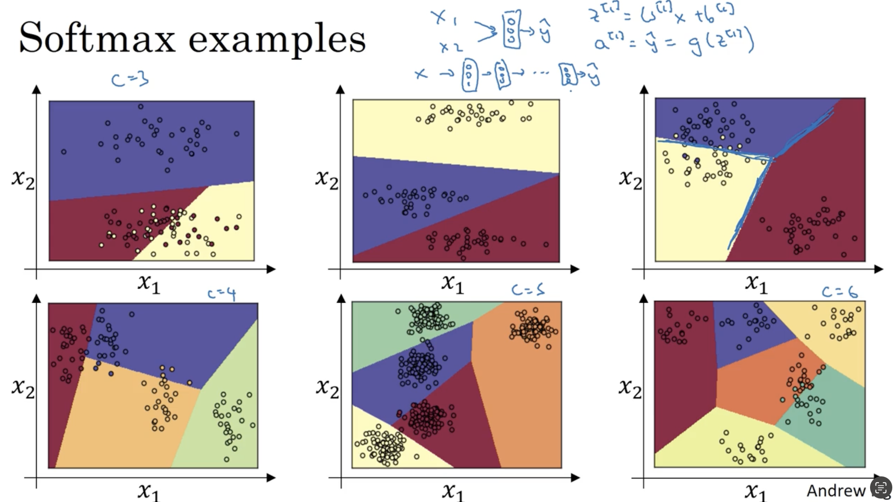
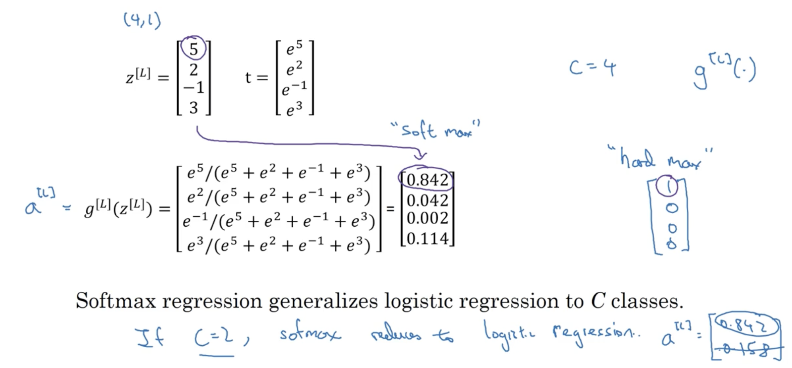
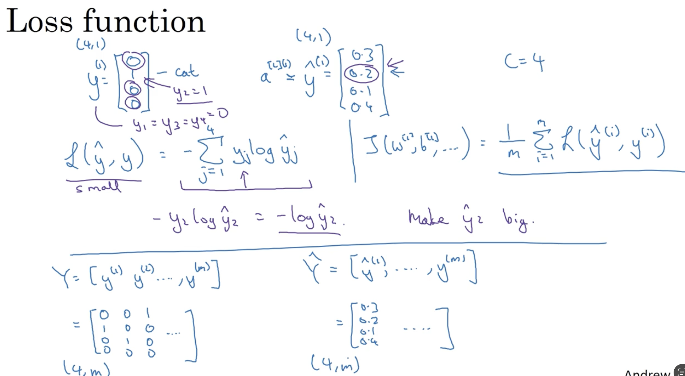
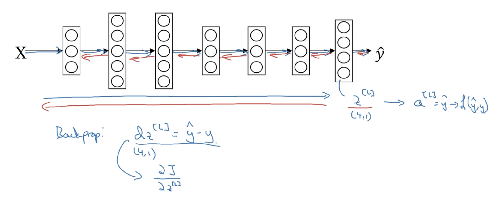

AndrewNg-DL-Course2-Week3¶
3.1 Tuning process¶
难点：有很多的超参数
参数之间的重要性：
- \(\alpha\)是最重要的
- \(\beta\)(0.9), # hidden units , mini-batch size
-
layers, learning rate decay¶
- \(\beta_{1}(0.9),\beta_{2}(0.999),\) 伊普斯龙\((10^{-8})\)
Try random values: Don't use a grid¶
Coarse to fine¶
3.2 Using an appropriate scale（合适的比例） to pick hyper parameter¶
搜索最优参数：使用线性轴去进行随机均匀取值是不合理的！
给定一个范围，超参在这个范围的不同区间对算法的效果不尽相同，选参的原则就是给不同的效果找尽可能一样多的参数样本点。
为了做到这个原则，就要改变参数轴，不再是线性的，而是对数轴，起到放大局部区间的效果。
3.3 Hyperparameters tuning in practice: Pandas vs. Caviar¶
- Pandas: 熊猫方式——babysitting one model
- 在训练过程中不断地观察并及时调参数以获得更优性能
-
当然也可以“大号练废了，再练一个小号”，过一段时间之后再去babysit一个
-
Caviar: 鱼子酱方式——training many models in parallel
- 计算机资源很多，可以同时训练很多个模型，最后选择一个性能最优的模型即可
3.4 Normalizing activations in a network¶
正则化：Regularization，归一化：Normalization
Batch Normalization ——Batch归一化，会使你的参数搜索问题变得很容易
tilde
Implementing Batch Norm¶
- 你也许不想隐藏单元值必须是平均值为0和方差为1
- 参数\(\gamma,\beta\)可以帮助我们控制隐藏单元层的平均值和方差
- 使隐藏单元值的均值和方差标准化
3.5 Fitting Batch Norm into a neural network¶
看看batch归一化how it fits into the training of a deep network
Adding Batch Norm(BN) to a network¶
- Batch Norms（归一化）是发生在计算z和a之间的
- 实践中，我们不必操作这些所有的具体的细节
Working with mini-batches¶
Batch归一化通常和训练集的mini-batch一起使用
- ⚠️，在mini-batch中增加任何常数（b）不会对最后有任何影响，因为加上的任何常数都将会被均值减法所抵消
Implementing gradient descent using Batch Norm¶
3.6 Why does Batch Norm work?¶
Learning on shifting input distribution¶
"Covariate shift"——这个啥shift就是，训练集和测试集不符合同一个分布
这边的例子就是，训练用的全是黑猫，验证用的全是花猫，那验证集的准确率肯定不高
这里吴师想表述的意思应该是：现在是左右两边相当于不同的x通过同一映射得到的y分布不同，而如果映射规则也会发生变化，情况就更加复杂
从图上看，标准正态分布曲线同一个y对应两个X，BN使得左右两边的数据都预测得很好，防止了Covarite shift问题，是这个意思吧
假设mini_batch（简记为MB）比较的小，那么每一个MB之间的样本分布差异可能很大，如果不使用BN，则容易出现权重参数的变化过大，原来学习到的东西会产生一些丢失，
Why this is a problem with neural networks?¶
说白了就是前层参数的变化会影响后层，如果不归一化，影响就会越累积越大
消除w,b带来的shift。尽量只保留由特征值带来的波动
Ng的意思就是说，前面层的参数的更新变化会让a2激活值发生很大的波动，而BN就是让数据集中于一个地方，避免了波动太大导致下一层不好学习
Batch Norm as regularization¶
Batch Norm有轻微的正则化效果
batch norm 既有乘性噪声（除以标准差），又有加性噪声（减均值））
和dropout一样是因为他也会轻微的加一点噪声影响，噪声是因为他使用的不是所有数据集而是一部分来求z，所以方差和均值都不是整个样本例子的真实方差和均值而是一个minibatch的
归一化过程中，均值和方差的估计是不准确的，因此引入了噪声，但这噪声也实现了轻微正则化的效果，相当于弄巧成拙
3.7 Batch Norm at test time¶
测试时的BN
也就是说均值和方差是需要根据前面计算过的minibatch得到的均值和方差进行指数平均后得到
总结：
在训练的时候，\(\mu ,\sigma^{2}\)是在an entire minibatch 上面计算出来的。
但是在测试的时候，你需要去逐一处理样本。
在train的时候，我们每一个minibatch都会得到一个mean和variance，然后test的时候就用mean和variance的exponentially weighted average
3.8 Softmax regression¶
识别多种类
Recognizing cats, dogs, and baby chicks¶
输出四个概率，四个概率的和为1
Softmax layer¶
softmax激活函数的特殊之处在于：输入和输出都是一个向量。

Softmax examples¶

线性是只有一层softmax的情况，把softmax作为深层神经网络的输出层就是非线性的了
3.9 Training a softmax classifier¶
Understanding softmax¶
softmax这个名称的来源是与hardmax相对比的。
- softmax所做的从z到最后结果（概率）的映射更为温和
- hardmax所做的映射就“hard”多了：哪个数最大就映射为1，其他为0

softmax回归将logistic回归推广到了两种分类以上。
Softmax regression generalizes logistic regression to C classes.
Loss function¶
怎么训练带有softmax输出层的神经网络
损失函数所做的就是：找到你的训练集中的真实类别，然后试图使该类别相应的概率尽可能的高
最大似然估计：什么样的参数和X结合能够是出现Y的概率达到最大

Gradient descent with softmax¶
在有softmax输出层的时候，如何实现梯度下降法
编程框架会帮助我们搞定导数计算。

sigmoid的公式就是在C=2，z2=0的情况下，softmax的特殊情况。
3.10 Deep Learining frameworks¶
从零开始写一个网络全部靠自己实现并不现实
Deep learning frameworks¶
- Caffe/caffe2
- cntk
- dl4j
- keras
- lasagne
- mxnet
- PaddlePaddle
- TensorFlow
- Theano
- Torch
Choosing deep learing frameworks
- ease of programming(development and deployment)
- Running speed
- truly open(open source with good governance【良好的管理】)
3.11 TensorFlow¶
- 使用tf.Variable来定义参数
- tf.add用两次的原因是：里面的tf.add是损失函数中的单项式相加；外面的tf.add是损失函数求和的操作
- Session.run(init)初始化全局变量
- session.run(w)评估变量
- placeholder是一个我之后会赋值的变量，这种方式便于把训练数据加入损失函数
| Python | |
|---|---|
1 2 3 4 5 6 7 8 9 10 11 12 13 14 15 16 17 18 19 | |
| Python | |
|---|---|
1 2 3 4 | |